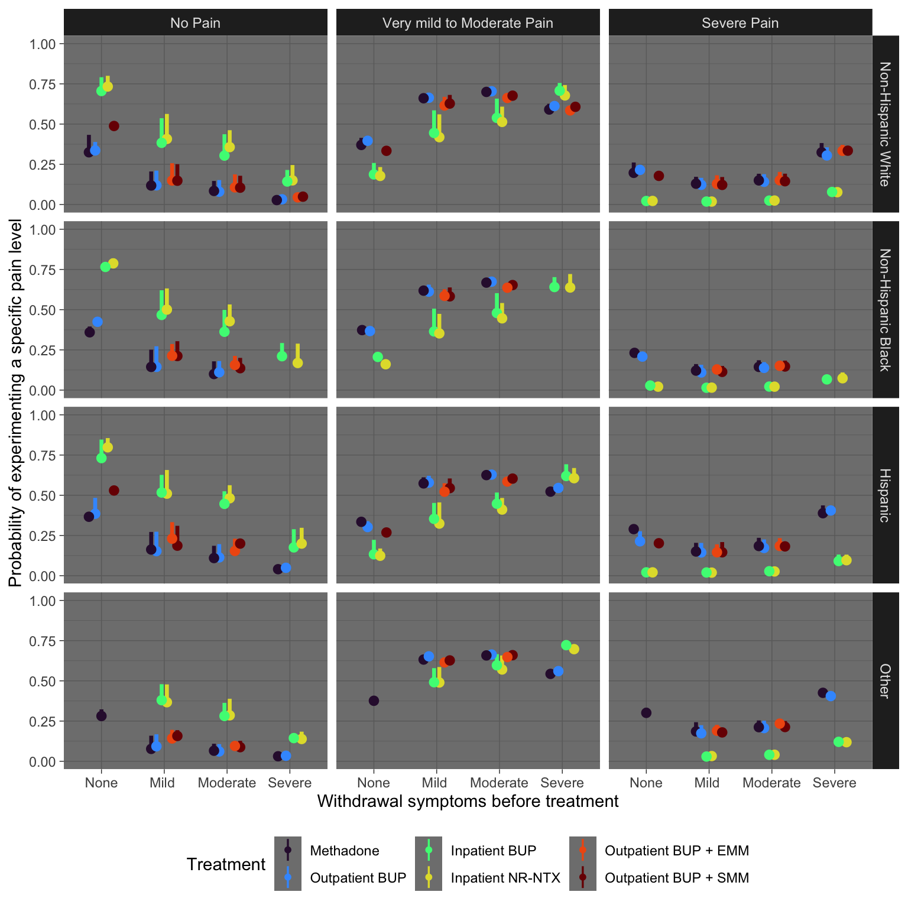
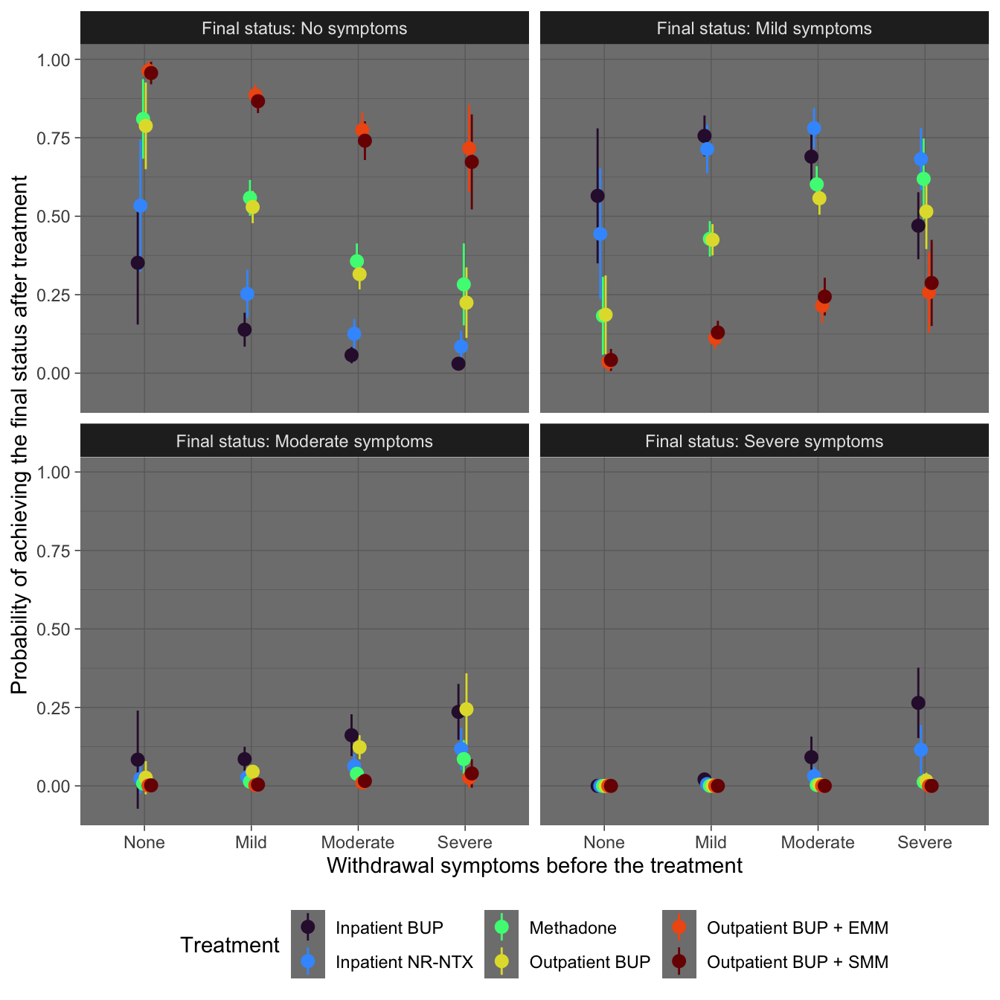
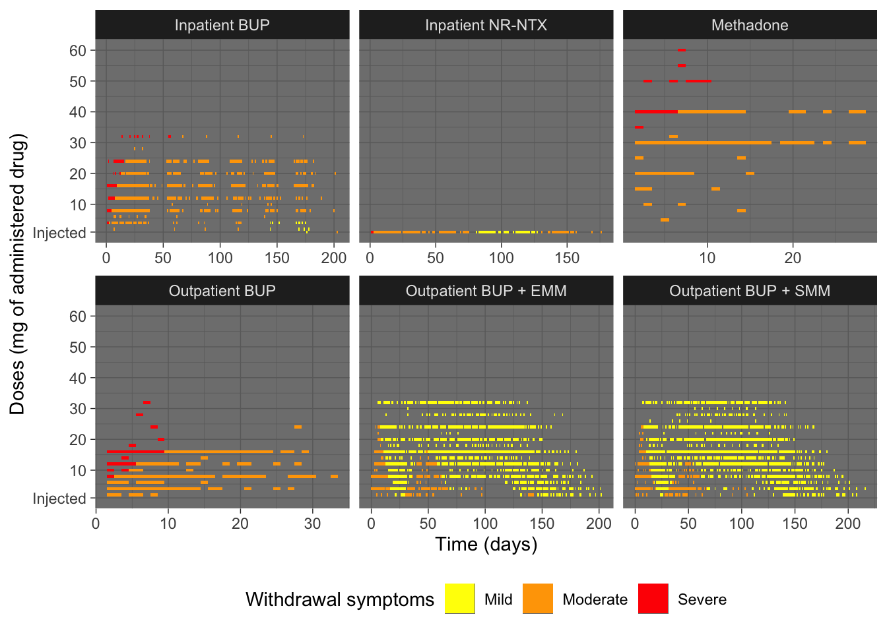
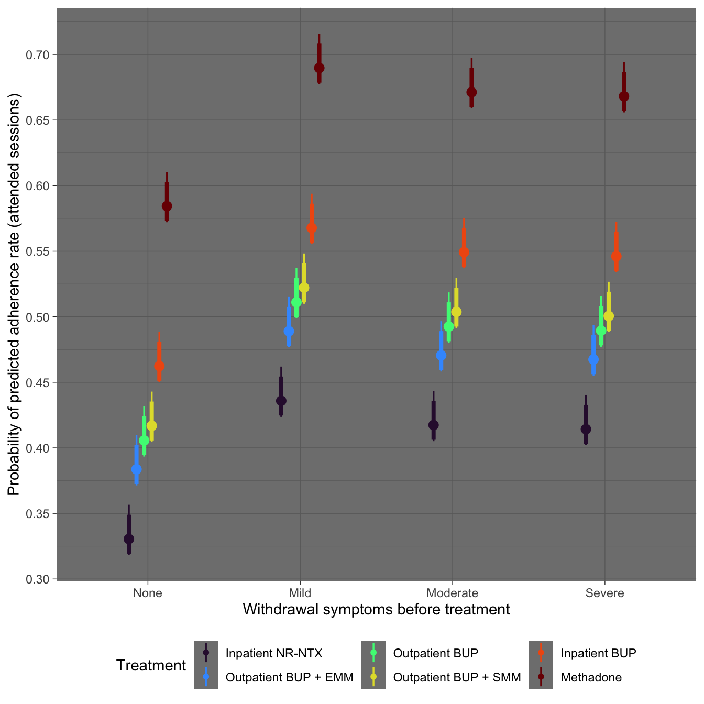
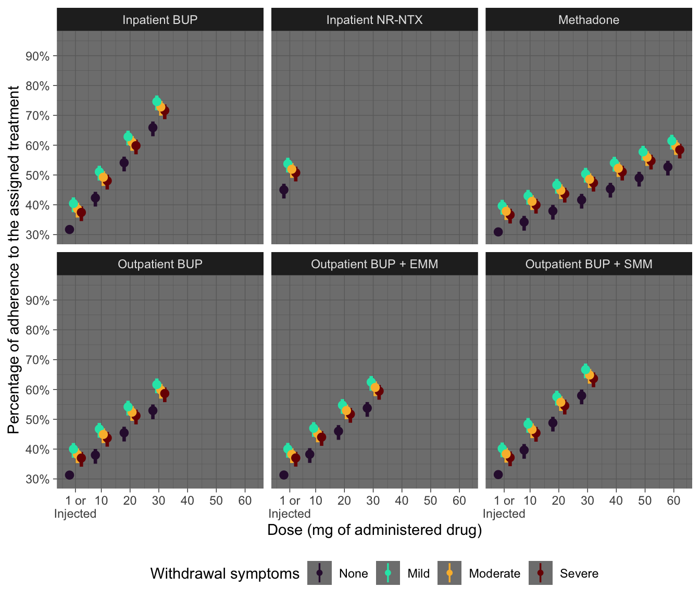

![]()
library(public.ctn0094data)
library(public.ctn0094extra)
library(dplyr) # data wrangling
library(tidyr) # data wrangling too
library(ggplot2) # data visualization
library(brms) # generalized linear modelling
library(mgcv) # generalized additive models for very large datasets
library(nnet) # for multinomial neural network algorithm
library(tidybayes) # data analysis and plotting
library(ggsci) # extra plot themes
library(tvthemes) # additional themes
library(marginaleffects) # counterfactual predictions and treatment effects
library(kableExtra) # table display
library(DT) # table display
library(plotly) # data visualizationOpioid Use Disorder
Background
Opioid use disorder (OUD) is defined as the chronic use of opioids that causes clinically significant distress or impairment. Symptoms of this disease include an overpowering desire to consume opioids, increased opioid tolerance, and withdrawal syndrome when opioids are discontinued (Leveille and Rambur 2024). OUD affects over 16 million people worldwide and over 2.1 million in the United States. While opioid painkillers prescriptions are becoming more closely regulated, cases of overdose and addiction are still increasing, especially among younger people. Thus, it is considered an important global health concern.
In this data analysis, we have tried to address how to optimize the treatments applied to alleviate OUD investigating their effectiveness against withdrawal symptoms, adherence, and pain.
Data processing and management
First, we are going to load the required libraries to conduct the analyses.
Second, we are going to set up a dataset that gathers all important information (i.e., variables of interest) which could help us to understand latent patterns for which some treatments can be potentially more beneficial (i.e., reducing withdrawal symptoms, or increasing treatment adherence) for a specific sub-population within OUD patients. Our start point will be the everybody dataset, which contains all the participants with their corresponding identifiers (who), and the project they belonged.
everybody %>%
head() %>%
kbl() %>%
kable_styling(full_width = FALSE,
position = "left")| who | project |
|---|---|
| 8 | 27 |
| 10 | 27 |
| 11 | 27 |
| 12 | 27 |
| 13 | 27 |
| 14 | 27 |
To predict what type of patients could benefit more from OUD treatments, we add demographic information to our dataset.
# selecting the variables of interest based on evidence that could potentially predict outcomes of interest
new.demo <- demographics %>%
select(who, age, education, marital, is_male) %>%
cbind(derived_raceEthnicity$race_ethnicity) # adding the self-reported race and ethnicity from the extra data
# dataset
data <- everybody %>%
full_join(new.demo, by = "who") %>%
rename(race = `derived_raceEthnicity$race_ethnicity`)Opioid addiction is rarely a stand-alone illness; frequently, people with opioid dependence are also struggling with a mental health condition. Therefore, psychiatric information can be useful to identify conditions that can be associated with OUDs.
# selectig variables related to the Addiction Severity Index-Lite Follow-up scale for depression, anxiety and schizophrenia
new.psycho <- psychiatric %>%
select(who, depression, anxiety, schizophrenia)
# combining datasets
data <- data %>%
full_join(new.psycho, by = "who") %>%
arrange(who)Next, the time span for detox is included in our data. We checked out whether any patient had just one data point.
# Checking data points
detox %>%
group_by(who) %>%
summarise(n = n()) %>%
ungroup() %>%
filter(!n == 2)
## # A tibble: 0 × 2
## # ℹ 2 variables: who <int>, n <int>
## all participants had admission and discharge data points
# Creating the new variable with the detox time span for each patient
new.detox <- detox %>%
mutate(what = factor(what, levels = c("admission",
"discharge"))) %>% # ensuring levels' names
arrange(what) %>% # ensuring discharge time point - admission time point
group_by(who) %>%
summarise(when = last(when) - first(when))
# combining datasets
data <- data %>%
full_join(new.detox, by = "who") %>%
arrange(who)It could be interesting exploring the relationship between nicotine and opioid use and abuse. There are several pathways by which unique nicotine-opioid interactions may confer greater risk for prescription opioid misuse. First, chronic nicotine exposure may result in dysregulation of the endogenous opioid system, leading to greater pain and cross-tolerance to prescription opioids. It can be a red flag: a person who is consuming a lot of cigarettes (i.e., nicotine), and put into practice programs to prevent opioid misuse.
# combining datasets
data <- data %>%
left_join(fagerstrom, by = "who")Also, an interesting factor that can be associated to OUD is the quality of life (i.e., whether people are homeless or living in a shelter). This data is provided by the PhenX Quality of Life Survey.
# combining datasets
data <- data %>%
left_join(qol, by = "who")The adherence to the programmed sessions could be a key predictor for health outcomes like withdrawal symptoms. We are going to extract the days that participants attended the programmed sessions, and calculate the percentage of satisfied sessions. These numbers have to be taken carefully because a session categorized as Missing could be a session where participant was late.
# calculate the adherence of participants to programmed sessions as percentage dividing the attended visits by the total number of programmed visits
new.visit <- derived_visitImputed %>%
group_by(who, visitImputed) %>%
summarise(n = n()) %>%
pivot_wider(names_from = visitImputed, values_from = n) %>%
ungroup() %>%
mutate(total = Missing + Present,
perc = Present / total) %>%
select(who, perc)
# combining datasets
data <- data %>%
full_join(new.visit, by = "who")Next, we are going to add the treatment that each participant received, and the day they started the assigned treatment.
# removing duplicated IDs (we ensured that duplicated participants received all the same treatement); assumption: if inductDelay is NA, then we used the randomization day as the day which treatments started
new.random <- randomization %>%
filter(!duplicated(who)) %>%
mutate(inductDelay = derived_inductDelay$inductDelay,
final.when = ifelse(inductDelay %in% NA, when, when + inductDelay)) %>%
select(who, treatment, final.when)
# combining datasets
data <- data %>%
full_join(new.random, by = "who")Also, it is important to see how treatments are effective against pain, which is the principal cause for which opioids are prescribed. Therefore, we select the pain scores that were registered after treatment engagement to identify, if possible, what treatment was associated to lower levels of pain.
# combining datasets
data <- data %>%
full_join(pain, by = "who") %>%
# variable creation indicating whether the day registered in the pain dataset is higher than the day of treatment involvement (when.y is the day that pain was registered)
mutate(validation = ifelse(when.y > final.when, 1, 0))
# when we analyze pain, we should filter the dataset by only the values == 1Finally, we also add the withdrawal symptoms, which can be a condition in this population really debilitating. It would be really useful and informative to investigate which treatment caused the greatest withdrawal symptoms reduction and for which people.
# creating the new withdrawal dataset
new_withdrawal <- withdrawal_pre_post %>%
# transforming the dataset to wide format
pivot_wider(names_from = what, values_from = c(withdrawal, when)) %>%
# days between pain assessments
mutate(duration_pre_post = when_post - when_pre) %>%
# ordering columns
select(who, withdrawal_pre, withdrawal_post, when_pre, when_post, duration_pre_post)
# It would be interesting to consider whether the symptoms were assessed before or after the patient started to received its assigned treatment
# combining datasets
data <- data %>%
full_join(new_withdrawal, by = "who")Our final dataset looks like this:
data %>%
mutate(perc = round(perc, 3)) %>%
head() %>%
kbl() %>%
kable_styling(position = "left")| who | project | age | education | marital | is_male | race | depression | anxiety | schizophrenia | when.x | is_smoker | ftnd | per_day | is_homeless | perc | treatment | final.when | pain | when.y | validation | withdrawal_pre | withdrawal_post | when_pre | when_post | duration_pre_post |
|---|---|---|---|---|---|---|---|---|---|---|---|---|---|---|---|---|---|---|---|---|---|---|---|---|---|
| 1 | 30 | 43 | More than HS | Married or Partnered | Yes | Non-Hispanic White | No | No | No | NA | Yes | 6 | 11-20 | NA | NA | NA | NA | No Pain | 7 | NA | NA | NA | NA | NA | NA |
| 2 | 30 | 30 | More than HS | Never married | No | Non-Hispanic White | Yes | Yes | No | NA | Yes | 1 | 11-20 | NA | 0.600 | Outpatient BUP + EMM | 7 | Severe Pain | 0 | 0 | 1 | 0 | NA | NA | NA |
| 3 | 51 | 23 | More than HS | Never married | No | Non-Hispanic Black | Yes | Yes | No | 5 | Yes | 3 | 10 OR LESS | Yes | 0.091 | Inpatient BUP | 13 | Very mild to Moderate Pain | 7 | 0 | 3 | NA | 5 | NA | NA |
| 4 | 51 | 19 | More than HS | Never married | Yes | Non-Hispanic White | Yes | Yes | No | 5 | Yes | 2 | 10 OR LESS | No | 0.917 | Inpatient NR-NTX | 1 | Very mild to Moderate Pain | 0 | 0 | 1 | 1 | 0 | 7 | 7 |
| 5 | 30 | 31 | NA | NA | No | Non-Hispanic White | Missing | Missing | Missing | NA | NA | NA | NA | NA | NA | NA | NA | NA | NA | NA | NA | NA | NA | NA | NA |
| 6 | 30 | 43 | HS/GED | Married or Partnered | Yes | Non-Hispanic White | No | No | No | NA | Yes | 4 | 31 OR MORE | NA | 0.133 | Outpatient BUP + SMM | 16 | Very mild to Moderate Pain | 9 | 0 | 2 | 0 | NA | NA | NA |
Pain
Opioids are often prescribed by doctors as painkillers, as they can relieve pain by blocking the pain signals between the body and the brain. The most effective treatment to relieve pain in these patients remain unknown due to the poor study methodology, and lack of evidence relating to possible harms (Avery et al. 2022). Thus, it would be useful for healthcare professionals evidence on which treatment is associated with lower pain levels, and in which specific subpopulations.
Note
To conduct this analysis, we first filtered by pain registers collected after treatment involvement trying to establish an association between treatment, and post-treatment levels. It would be very helpful in future studies to collect pre-treatment data to analyze between and inter-personal variability on pain levels in this population.
Fitting the models
In this section, we performed a predictive model using a multinomial log-linear model to predict the responses on pain levels of patients after being treated adjusting by the symptomatology before receiving the treatment and other demographics characteristics such as age and race. Then, we compared several models’ fit to ensure we predict the responses using the most exact model.
# ensuring replicability
set.seed(19042023)
# fitting multinomial models
## model adjusting by treatment
model <- multinom(pain ~ treatment, data = data, trace = FALSE)
## model adjusting by treatment and other covariates
model.1 <- multinom(pain ~ treatment + race + age + withdrawal_pre, data = data, trace = FALSE)Model fit comparison
Next, we are going to compare the fit of the performed models. We used two model fit parameters: the Akaike Information Criterion (AIC) and the deviance. Lower values in both parameters mean a better model fit. Differences in more than 5 points in the AIC is sufficient to rule out the model with the higher AIC value.
## model fit comparison
data.frame(Models = c("Model (treatment)",
"Model (treatment + more predictors)"),
AIC = c(model$AIC, model.1$AIC),
Deviance = c(model$deviance, model.1$deviance)) %>%
kbl()| Models | AIC | Deviance |
|---|---|---|
| Model (treatment) | 4414.45 | 4378.45 |
| Model (treatment + more predictors) | 4333.22 | 4255.22 |
The model with all predictors (i.e., the assigned treatment, the severity of withdrawal symptoms before the treatment, age, and the race) outperformed the simplest model. Therefore, we will use it to predict the probability of pain relief considering the treatment received, the severity of withdrawal symptoms before treatment, and the self-reported race adjusted by age.
Plotting the predictions
# plot
marginaleffects::predictions(model.1) %>%
as.data.frame() %>%
filter(group != "Missing") %>%
mutate(group = factor(group, levels = c("No Pain",
"Very mild to Moderate Pain",
"Severe Pain"))) %>%
group_by(treatment, withdrawal_pre, race, group) %>%
mean_qi(estimate) %>%
as.data.frame() %>%
mutate(treatment = reorder(treatment, estimate)) %>%
ggplot(aes(x = withdrawal_pre, y = .lower)) +
geom_pointinterval(aes(ymin = .lower,
ymax = .upper,
col = treatment),
position = position_dodge(width = 0.5)) +
facet_grid(race ~ group,
scales = "free") +
labs(col = "Treatment",
x = "Withdrawal symptoms before treatment",
y = "Probability of experimenting a specific pain level") +
theme_dark() +
scale_color_viridis_d(option = "H") +
scale_y_continuous(limits = 0:1,
breaks = seq(0, 1, 0.25)) +
scale_x_discrete(labels = c("None",
"Mild ",
"Moderate",
"Severe")) +
theme(legend.position = "bottom",
legend.box = "vertical",
strip.text = element_text(size = 9))
We can observe that naltrexone and buprenorphine administered to institutionalized patients showed the highest probability of total pain relief in all subpopulations regardless withdrawal symptoms before starting the treatment (Figure 1). Interestingly, more severe withdrawal symptoms before treatment involvement were associated with lower probabilities of pain relief; therefore, detox treatments for these patients are key for reducing opioid withdrawal symptoms, and potentially, achieve a complete pain relief. Although lack of rigorous evidence, a rapid review showed evidence supporting the practice of continuing methadone or buprenorphine for patients taking medication for OUD during acute pain episodes (Veazie et al. 2020). Furthermore, a clinical guideline for treating pain in patients with OUD by the Commonwealth of Pennsylvania also supports the use of buprenorphine for managing acute pain in OUD patients, indicating that there are data suggesting better performing of buprenorphine when compared to methadone, for example (Compton, Charuvastra, and Ling 2001). Evidence on naltrexone suggests that the extended-release (i.e., injectable) option is the preferred one for patients who would like to avoid taking any form of opioid or for whom buprenorphine or methadone are contraindicated (Connery 2015). Table 1 displays all numerical data.
# table
marginaleffects::predictions(model.1) %>%
as.data.frame() %>%
filter(group != "Missing") %>%
mutate(group = factor(group, levels = c("No Pain",
"Very mild to Moderate Pain",
"Severe Pain"))) %>%
mutate(withdrawal_pre = case_when(
withdrawal_pre == "0" ~ "None",
withdrawal_pre == "1" ~ "Mild",
withdrawal_pre == "2" ~ "Moderate",
withdrawal_pre == "3" ~ "Severe"
),
withdrawal_pre = factor(withdrawal_pre, levels = c("None",
"Mild",
"Moderate",
"Severe"))) %>%
group_by(treatment, withdrawal_pre, race, group) %>%
mean_qi(estimate) %>%
as.data.frame() %>%
mutate(treatment = reorder(treatment, estimate)) %>%
select(treatment, withdrawal_pre,
race, group, estimate,
.lower, .upper) %>%
rename(Treatment = treatment,
`Symptoms before treatment` = withdrawal_pre,
Race = race,
`Pain level\nafter treatment` = group,
Probability = estimate,
`95% lower bound` = .lower,
`95% upper bound` = .upper) %>%
mutate_if(is.numeric, round, 3) %>%
kbl()Table 1: Table 1. Predicted probabilities of pain level after treatment.
| Treatment | Symptoms before treatment | Race | Pain level after treatment | Probability | 95% lower bound | 95% upper bound |
|---|---|---|---|---|---|---|
| Inpatient BUP | None | Non-Hispanic White | No Pain | 0.759 | 0.706 | 0.791 |
| Inpatient BUP | None | Non-Hispanic White | Very mild to Moderate Pain | 0.214 | 0.187 | 0.258 |
| Inpatient BUP | None | Non-Hispanic White | Severe Pain | 0.027 | 0.022 | 0.036 |
| Inpatient BUP | None | Non-Hispanic Black | No Pain | 0.766 | 0.766 | 0.766 |
| Inpatient BUP | None | Non-Hispanic Black | Very mild to Moderate Pain | 0.206 | 0.206 | 0.206 |
| Inpatient BUP | None | Non-Hispanic Black | Severe Pain | 0.028 | 0.028 | 0.028 |
| Inpatient BUP | None | Hispanic | No Pain | 0.806 | 0.731 | 0.846 |
| Inpatient BUP | None | Hispanic | Very mild to Moderate Pain | 0.165 | 0.133 | 0.223 |
| Inpatient BUP | None | Hispanic | Severe Pain | 0.029 | 0.021 | 0.046 |
| Inpatient BUP | Mild | Non-Hispanic White | No Pain | 0.481 | 0.383 | 0.536 |
| Inpatient BUP | Mild | Non-Hispanic White | Very mild to Moderate Pain | 0.496 | 0.445 | 0.585 |
| Inpatient BUP | Mild | Non-Hispanic White | Severe Pain | 0.023 | 0.018 | 0.031 |
| Inpatient BUP | Mild | Non-Hispanic Black | No Pain | 0.540 | 0.467 | 0.621 |
| Inpatient BUP | Mild | Non-Hispanic Black | Very mild to Moderate Pain | 0.439 | 0.365 | 0.506 |
| Inpatient BUP | Mild | Non-Hispanic Black | Severe Pain | 0.020 | 0.015 | 0.026 |
| Inpatient BUP | Mild | Hispanic | No Pain | 0.579 | 0.517 | 0.627 |
| Inpatient BUP | Mild | Hispanic | Very mild to Moderate Pain | 0.396 | 0.353 | 0.452 |
| Inpatient BUP | Mild | Hispanic | Severe Pain | 0.024 | 0.020 | 0.031 |
| Inpatient BUP | Mild | Other | No Pain | 0.439 | 0.380 | 0.479 |
| Inpatient BUP | Mild | Other | Very mild to Moderate Pain | 0.527 | 0.491 | 0.579 |
| Inpatient BUP | Mild | Other | Severe Pain | 0.034 | 0.029 | 0.041 |
| Inpatient BUP | Moderate | Non-Hispanic White | No Pain | 0.392 | 0.304 | 0.437 |
| Inpatient BUP | Moderate | Non-Hispanic White | Very mild to Moderate Pain | 0.580 | 0.539 | 0.658 |
| Inpatient BUP | Moderate | Non-Hispanic White | Severe Pain | 0.029 | 0.024 | 0.038 |
| Inpatient BUP | Moderate | Non-Hispanic Black | No Pain | 0.433 | 0.363 | 0.499 |
| Inpatient BUP | Moderate | Non-Hispanic Black | Very mild to Moderate Pain | 0.539 | 0.479 | 0.603 |
| Inpatient BUP | Moderate | Non-Hispanic Black | Severe Pain | 0.028 | 0.022 | 0.035 |
| Inpatient BUP | Moderate | Hispanic | No Pain | 0.500 | 0.446 | 0.525 |
| Inpatient BUP | Moderate | Hispanic | Very mild to Moderate Pain | 0.470 | 0.448 | 0.517 |
| Inpatient BUP | Moderate | Hispanic | Severe Pain | 0.031 | 0.028 | 0.037 |
| Inpatient BUP | Moderate | Other | No Pain | 0.322 | 0.282 | 0.363 |
| Inpatient BUP | Moderate | Other | Very mild to Moderate Pain | 0.632 | 0.597 | 0.666 |
| Inpatient BUP | Moderate | Other | Severe Pain | 0.046 | 0.040 | 0.053 |
| Inpatient BUP | Severe | Non-Hispanic White | No Pain | 0.185 | 0.143 | 0.215 |
| Inpatient BUP | Severe | Non-Hispanic White | Very mild to Moderate Pain | 0.728 | 0.707 | 0.756 |
| Inpatient BUP | Severe | Non-Hispanic White | Severe Pain | 0.087 | 0.078 | 0.102 |
| Inpatient BUP | Severe | Non-Hispanic Black | No Pain | 0.254 | 0.211 | 0.293 |
| Inpatient BUP | Severe | Non-Hispanic Black | Very mild to Moderate Pain | 0.670 | 0.641 | 0.702 |
| Inpatient BUP | Severe | Non-Hispanic Black | Severe Pain | 0.076 | 0.067 | 0.087 |
| Inpatient BUP | Severe | Hispanic | No Pain | 0.247 | 0.176 | 0.289 |
| Inpatient BUP | Severe | Hispanic | Very mild to Moderate Pain | 0.648 | 0.620 | 0.693 |
| Inpatient BUP | Severe | Hispanic | Severe Pain | 0.105 | 0.091 | 0.131 |
| Inpatient BUP | Severe | Other | No Pain | 0.153 | 0.144 | 0.157 |
| Inpatient BUP | Severe | Other | Very mild to Moderate Pain | 0.724 | 0.722 | 0.729 |
| Inpatient BUP | Severe | Other | Severe Pain | 0.123 | 0.121 | 0.127 |
| Inpatient NR-NTX | None | Non-Hispanic White | No Pain | 0.779 | 0.733 | 0.800 |
| Inpatient NR-NTX | None | Non-Hispanic White | Very mild to Moderate Pain | 0.195 | 0.178 | 0.233 |
| Inpatient NR-NTX | None | Non-Hispanic White | Severe Pain | 0.026 | 0.022 | 0.034 |
| Inpatient NR-NTX | None | Non-Hispanic Black | No Pain | 0.807 | 0.788 | 0.818 |
| Inpatient NR-NTX | None | Non-Hispanic Black | Very mild to Moderate Pain | 0.169 | 0.161 | 0.186 |
| Inpatient NR-NTX | None | Non-Hispanic Black | Severe Pain | 0.023 | 0.021 | 0.027 |
| Inpatient NR-NTX | None | Hispanic | No Pain | 0.828 | 0.798 | 0.855 |
| Inpatient NR-NTX | None | Hispanic | Very mild to Moderate Pain | 0.146 | 0.124 | 0.169 |
| Inpatient NR-NTX | None | Hispanic | Severe Pain | 0.027 | 0.021 | 0.033 |
| Inpatient NR-NTX | Mild | Non-Hispanic White | No Pain | 0.513 | 0.408 | 0.563 |
| Inpatient NR-NTX | Mild | Non-Hispanic White | Very mild to Moderate Pain | 0.465 | 0.419 | 0.561 |
| Inpatient NR-NTX | Mild | Non-Hispanic White | Severe Pain | 0.022 | 0.018 | 0.032 |
| Inpatient NR-NTX | Mild | Non-Hispanic Black | No Pain | 0.574 | 0.501 | 0.632 |
| Inpatient NR-NTX | Mild | Non-Hispanic Black | Very mild to Moderate Pain | 0.407 | 0.353 | 0.474 |
| Inpatient NR-NTX | Mild | Non-Hispanic Black | Severe Pain | 0.020 | 0.015 | 0.026 |
| Inpatient NR-NTX | Mild | Hispanic | No Pain | 0.599 | 0.510 | 0.657 |
| Inpatient NR-NTX | Mild | Hispanic | Very mild to Moderate Pain | 0.376 | 0.324 | 0.456 |
| Inpatient NR-NTX | Mild | Hispanic | Severe Pain | 0.025 | 0.019 | 0.034 |
| Inpatient NR-NTX | Mild | Other | No Pain | 0.447 | 0.367 | 0.478 |
| Inpatient NR-NTX | Mild | Other | Very mild to Moderate Pain | 0.517 | 0.490 | 0.586 |
| Inpatient NR-NTX | Mild | Other | Severe Pain | 0.036 | 0.032 | 0.047 |
| Inpatient NR-NTX | Moderate | Non-Hispanic White | No Pain | 0.423 | 0.357 | 0.462 |
| Inpatient NR-NTX | Moderate | Non-Hispanic White | Very mild to Moderate Pain | 0.549 | 0.513 | 0.608 |
| Inpatient NR-NTX | Moderate | Non-Hispanic White | Severe Pain | 0.028 | 0.025 | 0.035 |
| Inpatient NR-NTX | Moderate | Non-Hispanic Black | No Pain | 0.502 | 0.428 | 0.533 |
| Inpatient NR-NTX | Moderate | Non-Hispanic Black | Very mild to Moderate Pain | 0.474 | 0.446 | 0.541 |
| Inpatient NR-NTX | Moderate | Non-Hispanic Black | Severe Pain | 0.024 | 0.021 | 0.031 |
| Inpatient NR-NTX | Moderate | Hispanic | No Pain | 0.520 | 0.481 | 0.562 |
| Inpatient NR-NTX | Moderate | Hispanic | Very mild to Moderate Pain | 0.449 | 0.411 | 0.483 |
| Inpatient NR-NTX | Moderate | Hispanic | Severe Pain | 0.031 | 0.026 | 0.035 |
| Inpatient NR-NTX | Moderate | Other | No Pain | 0.352 | 0.286 | 0.389 |
| Inpatient NR-NTX | Moderate | Other | Very mild to Moderate Pain | 0.602 | 0.571 | 0.658 |
| Inpatient NR-NTX | Moderate | Other | Severe Pain | 0.046 | 0.041 | 0.057 |
| Inpatient NR-NTX | Severe | Non-Hispanic White | No Pain | 0.203 | 0.150 | 0.245 |
| Inpatient NR-NTX | Severe | Non-Hispanic White | Very mild to Moderate Pain | 0.708 | 0.678 | 0.743 |
| Inpatient NR-NTX | Severe | Non-Hispanic White | Severe Pain | 0.089 | 0.077 | 0.107 |
| Inpatient NR-NTX | Severe | Non-Hispanic Black | No Pain | 0.221 | 0.169 | 0.289 |
| Inpatient NR-NTX | Severe | Non-Hispanic Black | Very mild to Moderate Pain | 0.687 | 0.638 | 0.722 |
| Inpatient NR-NTX | Severe | Non-Hispanic Black | Severe Pain | 0.093 | 0.074 | 0.110 |
| Inpatient NR-NTX | Severe | Hispanic | No Pain | 0.259 | 0.200 | 0.298 |
| Inpatient NR-NTX | Severe | Hispanic | Very mild to Moderate Pain | 0.632 | 0.606 | 0.669 |
| Inpatient NR-NTX | Severe | Hispanic | Severe Pain | 0.109 | 0.096 | 0.131 |
| Inpatient NR-NTX | Severe | Other | No Pain | 0.168 | 0.139 | 0.184 |
| Inpatient NR-NTX | Severe | Other | Very mild to Moderate Pain | 0.706 | 0.697 | 0.721 |
| Inpatient NR-NTX | Severe | Other | Severe Pain | 0.126 | 0.119 | 0.140 |
| Methadone | None | Non-Hispanic White | No Pain | 0.398 | 0.325 | 0.433 |
| Methadone | None | Non-Hispanic White | Very mild to Moderate Pain | 0.385 | 0.370 | 0.414 |
| Methadone | None | Non-Hispanic White | Severe Pain | 0.217 | 0.197 | 0.261 |
| Methadone | None | Non-Hispanic Black | No Pain | 0.377 | 0.359 | 0.395 |
| Methadone | None | Non-Hispanic Black | Very mild to Moderate Pain | 0.380 | 0.373 | 0.387 |
| Methadone | None | Non-Hispanic Black | Severe Pain | 0.243 | 0.231 | 0.254 |
| Methadone | None | Hispanic | No Pain | 0.371 | 0.366 | 0.376 |
| Methadone | None | Hispanic | Very mild to Moderate Pain | 0.336 | 0.335 | 0.338 |
| Methadone | None | Hispanic | Severe Pain | 0.293 | 0.289 | 0.296 |
| Methadone | None | Other | No Pain | 0.302 | 0.281 | 0.323 |
| Methadone | None | Other | Very mild to Moderate Pain | 0.381 | 0.376 | 0.387 |
| Methadone | None | Other | Severe Pain | 0.316 | 0.301 | 0.332 |
| Methadone | Mild | Non-Hispanic White | No Pain | 0.167 | 0.118 | 0.205 |
| Methadone | Mild | Non-Hispanic White | Very mild to Moderate Pain | 0.675 | 0.661 | 0.686 |
| Methadone | Mild | Non-Hispanic White | Severe Pain | 0.147 | 0.129 | 0.172 |
| Methadone | Mild | Non-Hispanic Black | No Pain | 0.179 | 0.144 | 0.251 |
| Methadone | Mild | Non-Hispanic Black | Very mild to Moderate Pain | 0.642 | 0.618 | 0.646 |
| Methadone | Mild | Non-Hispanic Black | Severe Pain | 0.148 | 0.121 | 0.162 |
| Methadone | Mild | Hispanic | No Pain | 0.205 | 0.163 | 0.272 |
| Methadone | Mild | Hispanic | Very mild to Moderate Pain | 0.600 | 0.574 | 0.612 |
| Methadone | Mild | Hispanic | Severe Pain | 0.182 | 0.150 | 0.204 |
| Methadone | Mild | Other | No Pain | 0.119 | 0.077 | 0.159 |
| Methadone | Mild | Other | Very mild to Moderate Pain | 0.648 | 0.632 | 0.654 |
| Methadone | Mild | Other | Severe Pain | 0.213 | 0.186 | 0.243 |
| Methadone | Moderate | Non-Hispanic White | No Pain | 0.117 | 0.084 | 0.146 |
| Methadone | Moderate | Non-Hispanic White | Very mild to Moderate Pain | 0.706 | 0.700 | 0.709 |
| Methadone | Moderate | Non-Hispanic White | Severe Pain | 0.168 | 0.150 | 0.191 |
| Methadone | Moderate | Non-Hispanic Black | No Pain | 0.131 | 0.100 | 0.179 |
| Methadone | Moderate | Non-Hispanic Black | Very mild to Moderate Pain | 0.675 | 0.668 | 0.679 |
| Methadone | Moderate | Non-Hispanic Black | Severe Pain | 0.169 | 0.144 | 0.186 |
| Methadone | Moderate | Hispanic | No Pain | 0.147 | 0.110 | 0.186 |
| Methadone | Moderate | Hispanic | Very mild to Moderate Pain | 0.634 | 0.625 | 0.637 |
| Methadone | Moderate | Hispanic | Severe Pain | 0.209 | 0.185 | 0.235 |
| Methadone | Moderate | Other | No Pain | 0.087 | 0.066 | 0.109 |
| Methadone | Moderate | Other | Very mild to Moderate Pain | 0.668 | 0.658 | 0.673 |
| Methadone | Moderate | Other | Severe Pain | 0.232 | 0.212 | 0.254 |
| Methadone | Severe | Non-Hispanic White | No Pain | 0.040 | 0.027 | 0.050 |
| Methadone | Severe | Non-Hispanic White | Very mild to Moderate Pain | 0.613 | 0.590 | 0.626 |
| Methadone | Severe | Non-Hispanic White | Severe Pain | 0.347 | 0.324 | 0.382 |
| Methadone | Severe | Hispanic | No Pain | 0.053 | 0.040 | 0.063 |
| Methadone | Severe | Hispanic | Very mild to Moderate Pain | 0.538 | 0.523 | 0.549 |
| Methadone | Severe | Hispanic | Severe Pain | 0.410 | 0.388 | 0.437 |
| Methadone | Severe | Other | No Pain | 0.031 | 0.031 | 0.031 |
| Methadone | Severe | Other | Very mild to Moderate Pain | 0.543 | 0.543 | 0.543 |
| Methadone | Severe | Other | Severe Pain | 0.426 | 0.426 | 0.426 |
| Outpatient BUP | None | Non-Hispanic White | No Pain | 0.361 | 0.336 | 0.389 |
| Outpatient BUP | None | Non-Hispanic White | Very mild to Moderate Pain | 0.407 | 0.396 | 0.417 |
| Outpatient BUP | None | Non-Hispanic White | Severe Pain | 0.232 | 0.215 | 0.246 |
| Outpatient BUP | None | Non-Hispanic Black | No Pain | 0.425 | 0.425 | 0.425 |
| Outpatient BUP | None | Non-Hispanic Black | Very mild to Moderate Pain | 0.367 | 0.367 | 0.367 |
| Outpatient BUP | None | Non-Hispanic Black | Severe Pain | 0.208 | 0.208 | 0.208 |
| Outpatient BUP | None | Hispanic | No Pain | 0.441 | 0.385 | 0.484 |
| Outpatient BUP | None | Hispanic | Very mild to Moderate Pain | 0.319 | 0.302 | 0.339 |
| Outpatient BUP | None | Hispanic | Severe Pain | 0.241 | 0.214 | 0.276 |
| Outpatient BUP | Mild | Non-Hispanic White | No Pain | 0.173 | 0.119 | 0.211 |
| Outpatient BUP | Mild | Non-Hispanic White | Very mild to Moderate Pain | 0.680 | 0.664 | 0.695 |
| Outpatient BUP | Mild | Non-Hispanic White | Severe Pain | 0.139 | 0.122 | 0.166 |
| Outpatient BUP | Mild | Non-Hispanic Black | No Pain | 0.187 | 0.144 | 0.272 |
| Outpatient BUP | Mild | Non-Hispanic Black | Very mild to Moderate Pain | 0.648 | 0.612 | 0.656 |
| Outpatient BUP | Mild | Non-Hispanic Black | Severe Pain | 0.141 | 0.110 | 0.157 |
| Outpatient BUP | Mild | Hispanic | No Pain | 0.204 | 0.153 | 0.273 |
| Outpatient BUP | Mild | Hispanic | Very mild to Moderate Pain | 0.608 | 0.579 | 0.621 |
| Outpatient BUP | Mild | Hispanic | Severe Pain | 0.177 | 0.144 | 0.204 |
| Outpatient BUP | Mild | Other | No Pain | 0.132 | 0.093 | 0.168 |
| Outpatient BUP | Mild | Other | Very mild to Moderate Pain | 0.659 | 0.652 | 0.662 |
| Outpatient BUP | Mild | Other | Severe Pain | 0.197 | 0.174 | 0.224 |
| Outpatient BUP | Moderate | Non-Hispanic White | No Pain | 0.119 | 0.080 | 0.152 |
| Outpatient BUP | Moderate | Non-Hispanic White | Very mild to Moderate Pain | 0.713 | 0.704 | 0.717 |
| Outpatient BUP | Moderate | Non-Hispanic White | Severe Pain | 0.161 | 0.141 | 0.189 |
| Outpatient BUP | Moderate | Non-Hispanic Black | No Pain | 0.136 | 0.111 | 0.181 |
| Outpatient BUP | Moderate | Non-Hispanic Black | Very mild to Moderate Pain | 0.686 | 0.674 | 0.688 |
| Outpatient BUP | Moderate | Non-Hispanic Black | Severe Pain | 0.160 | 0.138 | 0.174 |
| Outpatient BUP | Moderate | Hispanic | No Pain | 0.152 | 0.114 | 0.196 |
| Outpatient BUP | Moderate | Hispanic | Very mild to Moderate Pain | 0.641 | 0.628 | 0.646 |
| Outpatient BUP | Moderate | Hispanic | Severe Pain | 0.199 | 0.172 | 0.225 |
| Outpatient BUP | Moderate | Other | No Pain | 0.087 | 0.061 | 0.107 |
| Outpatient BUP | Moderate | Other | Very mild to Moderate Pain | 0.677 | 0.664 | 0.681 |
| Outpatient BUP | Moderate | Other | Severe Pain | 0.225 | 0.206 | 0.252 |
| Outpatient BUP | Severe | Non-Hispanic White | No Pain | 0.044 | 0.033 | 0.055 |
| Outpatient BUP | Severe | Non-Hispanic White | Very mild to Moderate Pain | 0.628 | 0.612 | 0.640 |
| Outpatient BUP | Severe | Non-Hispanic White | Severe Pain | 0.328 | 0.305 | 0.355 |
| Outpatient BUP | Severe | Hispanic | No Pain | 0.049 | 0.049 | 0.049 |
| Outpatient BUP | Severe | Hispanic | Very mild to Moderate Pain | 0.545 | 0.545 | 0.545 |
| Outpatient BUP | Severe | Hispanic | Severe Pain | 0.405 | 0.405 | 0.405 |
| Outpatient BUP | Severe | Other | No Pain | 0.034 | 0.034 | 0.034 |
| Outpatient BUP | Severe | Other | Very mild to Moderate Pain | 0.560 | 0.560 | 0.560 |
| Outpatient BUP | Severe | Other | Severe Pain | 0.405 | 0.405 | 0.405 |
| Outpatient BUP + EMM | Mild | Non-Hispanic White | No Pain | 0.212 | 0.149 | 0.257 |
| Outpatient BUP + EMM | Mild | Non-Hispanic White | Very mild to Moderate Pain | 0.639 | 0.615 | 0.669 |
| Outpatient BUP + EMM | Mild | Non-Hispanic White | Severe Pain | 0.148 | 0.128 | 0.182 |
| Outpatient BUP + EMM | Mild | Non-Hispanic Black | No Pain | 0.253 | 0.213 | 0.287 |
| Outpatient BUP + EMM | Mild | Non-Hispanic Black | Very mild to Moderate Pain | 0.605 | 0.586 | 0.627 |
| Outpatient BUP + EMM | Mild | Non-Hispanic Black | Severe Pain | 0.142 | 0.128 | 0.160 |
| Outpatient BUP + EMM | Mild | Hispanic | No Pain | 0.287 | 0.230 | 0.333 |
| Outpatient BUP + EMM | Mild | Hispanic | Very mild to Moderate Pain | 0.546 | 0.522 | 0.575 |
| Outpatient BUP + EMM | Mild | Hispanic | Severe Pain | 0.167 | 0.146 | 0.195 |
| Outpatient BUP + EMM | Mild | Other | No Pain | 0.179 | 0.142 | 0.196 |
| Outpatient BUP + EMM | Mild | Other | Very mild to Moderate Pain | 0.620 | 0.615 | 0.632 |
| Outpatient BUP + EMM | Mild | Other | Severe Pain | 0.201 | 0.190 | 0.226 |
| Outpatient BUP + EMM | Moderate | Non-Hispanic White | No Pain | 0.155 | 0.107 | 0.187 |
| Outpatient BUP + EMM | Moderate | Non-Hispanic White | Very mild to Moderate Pain | 0.676 | 0.662 | 0.691 |
| Outpatient BUP + EMM | Moderate | Non-Hispanic White | Severe Pain | 0.169 | 0.150 | 0.203 |
| Outpatient BUP + EMM | Moderate | Non-Hispanic Black | No Pain | 0.184 | 0.156 | 0.213 |
| Outpatient BUP + EMM | Moderate | Non-Hispanic Black | Very mild to Moderate Pain | 0.650 | 0.636 | 0.662 |
| Outpatient BUP + EMM | Moderate | Non-Hispanic Black | Severe Pain | 0.167 | 0.151 | 0.182 |
| Outpatient BUP + EMM | Moderate | Hispanic | No Pain | 0.200 | 0.154 | 0.230 |
| Outpatient BUP + EMM | Moderate | Hispanic | Very mild to Moderate Pain | 0.596 | 0.585 | 0.612 |
| Outpatient BUP + EMM | Moderate | Hispanic | Severe Pain | 0.204 | 0.185 | 0.234 |
| Outpatient BUP + EMM | Moderate | Other | No Pain | 0.107 | 0.095 | 0.118 |
| Outpatient BUP + EMM | Moderate | Other | Very mild to Moderate Pain | 0.648 | 0.648 | 0.648 |
| Outpatient BUP + EMM | Moderate | Other | Severe Pain | 0.245 | 0.234 | 0.256 |
| Outpatient BUP + EMM | Severe | Non-Hispanic White | No Pain | 0.056 | 0.045 | 0.063 |
| Outpatient BUP + EMM | Severe | Non-Hispanic White | Very mild to Moderate Pain | 0.596 | 0.585 | 0.603 |
| Outpatient BUP + EMM | Severe | Non-Hispanic White | Severe Pain | 0.348 | 0.334 | 0.371 |
| Outpatient BUP + SMM | None | Non-Hispanic White | No Pain | 0.488 | 0.488 | 0.488 |
| Outpatient BUP + SMM | None | Non-Hispanic White | Very mild to Moderate Pain | 0.334 | 0.334 | 0.334 |
| Outpatient BUP + SMM | None | Non-Hispanic White | Severe Pain | 0.178 | 0.178 | 0.178 |
| Outpatient BUP + SMM | None | Hispanic | No Pain | 0.530 | 0.530 | 0.530 |
| Outpatient BUP + SMM | None | Hispanic | Very mild to Moderate Pain | 0.269 | 0.269 | 0.269 |
| Outpatient BUP + SMM | None | Hispanic | Severe Pain | 0.202 | 0.202 | 0.202 |
| Outpatient BUP + SMM | Mild | Non-Hispanic White | No Pain | 0.205 | 0.148 | 0.251 |
| Outpatient BUP + SMM | Mild | Non-Hispanic White | Very mild to Moderate Pain | 0.653 | 0.627 | 0.681 |
| Outpatient BUP + SMM | Mild | Non-Hispanic White | Severe Pain | 0.142 | 0.122 | 0.171 |
| Outpatient BUP + SMM | Mild | Non-Hispanic Black | No Pain | 0.260 | 0.212 | 0.304 |
| Outpatient BUP + SMM | Mild | Non-Hispanic Black | Very mild to Moderate Pain | 0.610 | 0.583 | 0.638 |
| Outpatient BUP + SMM | Mild | Non-Hispanic Black | Severe Pain | 0.130 | 0.113 | 0.150 |
| Outpatient BUP + SMM | Mild | Hispanic | No Pain | 0.258 | 0.187 | 0.310 |
| Outpatient BUP + SMM | Mild | Hispanic | Very mild to Moderate Pain | 0.571 | 0.544 | 0.604 |
| Outpatient BUP + SMM | Mild | Hispanic | Severe Pain | 0.171 | 0.146 | 0.209 |
| Outpatient BUP + SMM | Mild | Other | No Pain | 0.169 | 0.157 | 0.193 |
| Outpatient BUP + SMM | Mild | Other | Very mild to Moderate Pain | 0.637 | 0.627 | 0.641 |
| Outpatient BUP + SMM | Mild | Other | Severe Pain | 0.195 | 0.180 | 0.202 |
| Outpatient BUP + SMM | Moderate | Non-Hispanic White | No Pain | 0.150 | 0.105 | 0.179 |
| Outpatient BUP + SMM | Moderate | Non-Hispanic White | Very mild to Moderate Pain | 0.689 | 0.677 | 0.704 |
| Outpatient BUP + SMM | Moderate | Non-Hispanic White | Severe Pain | 0.161 | 0.145 | 0.192 |
| Outpatient BUP + SMM | Moderate | Non-Hispanic Black | No Pain | 0.170 | 0.136 | 0.200 |
| Outpatient BUP + SMM | Moderate | Non-Hispanic Black | Very mild to Moderate Pain | 0.667 | 0.653 | 0.681 |
| Outpatient BUP + SMM | Moderate | Non-Hispanic Black | Severe Pain | 0.163 | 0.147 | 0.183 |
| Outpatient BUP + SMM | Moderate | Hispanic | No Pain | 0.206 | 0.200 | 0.214 |
| Outpatient BUP + SMM | Moderate | Hispanic | Very mild to Moderate Pain | 0.607 | 0.604 | 0.610 |
| Outpatient BUP + SMM | Moderate | Hispanic | Severe Pain | 0.187 | 0.182 | 0.190 |
| Outpatient BUP + SMM | Moderate | Other | No Pain | 0.107 | 0.088 | 0.127 |
| Outpatient BUP + SMM | Moderate | Other | Very mild to Moderate Pain | 0.662 | 0.660 | 0.663 |
| Outpatient BUP + SMM | Moderate | Other | Severe Pain | 0.231 | 0.213 | 0.250 |
| Outpatient BUP + SMM | Severe | Non-Hispanic White | No Pain | 0.051 | 0.049 | 0.053 |
| Outpatient BUP + SMM | Severe | Non-Hispanic White | Very mild to Moderate Pain | 0.610 | 0.607 | 0.612 |
| Outpatient BUP + SMM | Severe | Non-Hispanic White | Severe Pain | 0.339 | 0.335 | 0.344 |
Important
Extended-release (injected) naltrexone and buprenorphine administered in institutionalized settings were associated to higher probabilities of pain relief. Lower probabilities of pain relief, and smaller differences between treatments were detected in patients with more severe withdrawal symptoms.
Withdrawal symptoms
When a patient with an addiction tries to stop taking the opioid, he or she may feel the symptoms of withdrawal, which include anxiety, wanting to take the drug again, hyperactivity, being easily agitated, increase in the blood pressure and heart rate, or rapid breathing. Though temporary, opioid withdrawal can be incredibly debilitating.
In this section, we performed a predictive model using a multinomial log-linear model to predict the responses on withdrawal symptoms of patients after being treated adjusting by the symptomatology before receiving the treatment and other demographics characteristics such as gender and race. In addition, we compared several models’ fit to ensure we predict the responses using the most exact model.
Fitting the models
# ensuring replicability
set.seed(19042023)
# Fitting the model with treatment and pre-score predictors
mod <- multinom(factor(withdrawal_post) ~ treatment + withdrawal_pre,
data = data,
trace = FALSE)
# Fitting the model with treatment, pre-score, and gender predictors
mod.1 <- multinom(factor(withdrawal_post) ~ treatment + withdrawal_pre + is_male, data = data,
trace = FALSE)
# Fitting the model with treatment, pre-score, gender, and race predictors
mod.2 <- multinom(factor(withdrawal_post) ~ treatment + withdrawal_pre + is_male + race,
data = data,
trace = FALSE)Model fit comparison
Next, we are going to compare the fit of the performed models. We used two model fit parameters: the Akaike Information Criterion (AIC) and the deviance. Lower values in both parameters mean a better model fit. Differences in more than 5 points in the AIC is sufficient to rule out the model with the higher AIC value.
## Model fit comparison
data.frame(Model = c("Model (treat + pre)",
"Model (treat + pre + is_male",
"Model (treat + pre + is_male + race)"),
AIC = c(mod$AIC, mod.1$AIC, mod.2$AIC),
Deviance = c(mod$deviance, mod.1$deviance, mod.2$deviance)) %>%
kbl()| Model | AIC | Deviance |
|---|---|---|
| Model (treat + pre) | 3529.243 | 3475.243 |
| Model (treat + pre + is_male | 3519.824 | 3459.824 |
| Model (treat + pre + is_male + race) | 3513.820 | 3435.820 |
The model with all predictors (i.e., the assigned treatment, the severity of withdrawal symptoms before the treatment, the gender, and the race) outperformed the rest of models. Therefore, we will use it to predict the probability of withdrawal symptoms considering the treatment received and the severity of withdrawal symptoms before treatment adjusted by gender and race.
Plotting the predictions
plot_predictions(mod.2, condition = c("withdrawal_pre", "treatment"), type = "probs") +
facet_wrap(~ group,
labeller = as_labeller(c("0" = "Final status: No symptoms",
"1" = "Final status: Mild symptoms",
"2" = "Final status: Moderate symptoms",
"3" = "Final status: Severe symptoms"))) +
labs(x = "Withdrawal symptoms before the treatment",
y = "Probability of achieving the final status after treatment",
col = "Treatment") +
theme_dark() +
scale_color_viridis_d(option = "H") +
scale_x_discrete(labels = c("None",
"Mild",
"Moderate",
"Severe")) +
theme(legend.position = "bottom",
legend.box = "vertical")
In Figure 2 we can observe the treatment predicted responses to withdrawal symptoms. The treatments showing the highest probability of no withdrawal symptoms after treatment regardless the associated symptoms before treatment involvement were those based on Outpatient Buprenorphine + Enhanced Medical Management (defined as Standard Medical Management plus Individual Drug Counselling) and Outpatient Buprenorphine + Standard Medical Management. For example, a person who suffered severe opiod withdrawal symptoms before treatment and received Outpatient Buprenorphine + EMM had a probability of 0.693 (95% CI 0.658 to 0.716) of total withdrawal symptoms recovery. Comparably, if the same person would receive Methadone or isolated Outpatient Buprenorphine (i.e., no EMM or SMM), he/she would have probabilities of no withdrawal symptoms of 0.279 (95% CI 0.218 to 0.412), and 0.231 (95% CI 0.171 to 0.329), respectively. Evidence showing different characteristics associated to outpatient and inpatient settings suggests that outpatients can be favored for controlling withdrawal symptoms (Varney et al. 2021). In addition, inpatient treatments resulted in less effective interventions, achieving a potential reduction of severe symptoms, but with a very low probability of total withdrawal symptoms recovery. Naltrexone presented more benefits than buprenorphine in inpatients for withdrawal symptoms. Evidence supports this finding showing that naltrexone is an opioid antagonist, meaning that it works differently than methadone and buprenorphine to treat OUD by blocking opioid receptor activity (Varney et al. 2021). Numerical values are presented in Table 2.
predictions(mod.2) %>%
group_by(treatment, withdrawal_pre, group) %>%
mean_qi(estimate) %>%
as.data.frame() %>%
mutate(withdrawal_pre = case_when(
withdrawal_pre == "0" ~ "No symptoms",
withdrawal_pre == "1" ~ "Mild symptoms",
withdrawal_pre == "2" ~ "Moderate symptoms",
withdrawal_pre == "3" ~ "Severe symptoms"
),
group = case_when(
group == "0" ~ "No symptoms",
group == "1" ~ "Mild symptoms",
group == "2" ~ "Moderate symptoms",
group == "3" ~ "Severe symptoms"
)) %>%
rename(Treatment = treatment,
`Symptoms before\ntreatment` = withdrawal_pre,
`Symptoms after\ntreatment` = group,
Probability = estimate,
`95% lower bound` = .lower,
`95% upper bound` = .upper) %>%
select(Treatment, `Symptoms before\ntreatment`,
`Symptoms after\ntreatment`, Probability,
`95% lower bound`, `95% upper bound`) %>%
mutate_if(is.numeric, round, 3) %>%
kbl()Table 2: Table 2. Predicted probabilities of withdrawal symptoms after treatment.
| Treatment | Symptoms before treatment | Symptoms after treatment | Probability | 95% lower bound | 95% upper bound |
|---|---|---|---|---|---|
| Inpatient BUP | No symptoms | No symptoms | 0.343 | 0.334 | 0.352 |
| Inpatient BUP | No symptoms | Mild symptoms | 0.584 | 0.565 | 0.602 |
| Inpatient BUP | No symptoms | Moderate symptoms | 0.074 | 0.064 | 0.084 |
| Inpatient BUP | No symptoms | Severe symptoms | 0.000 | 0.000 | 0.000 |
| Inpatient BUP | Mild symptoms | No symptoms | 0.144 | 0.101 | 0.225 |
| Inpatient BUP | Mild symptoms | Mild symptoms | 0.737 | 0.661 | 0.784 |
| Inpatient BUP | Mild symptoms | Moderate symptoms | 0.094 | 0.063 | 0.146 |
| Inpatient BUP | Mild symptoms | Severe symptoms | 0.026 | 0.020 | 0.036 |
| Inpatient BUP | Moderate symptoms | No symptoms | 0.057 | 0.040 | 0.095 |
| Inpatient BUP | Moderate symptoms | Mild symptoms | 0.646 | 0.571 | 0.716 |
| Inpatient BUP | Moderate symptoms | Moderate symptoms | 0.187 | 0.120 | 0.251 |
| Inpatient BUP | Moderate symptoms | Severe symptoms | 0.110 | 0.091 | 0.166 |
| Inpatient BUP | Severe symptoms | No symptoms | 0.028 | 0.018 | 0.046 |
| Inpatient BUP | Severe symptoms | Mild symptoms | 0.429 | 0.365 | 0.482 |
| Inpatient BUP | Severe symptoms | Moderate symptoms | 0.240 | 0.173 | 0.329 |
| Inpatient BUP | Severe symptoms | Severe symptoms | 0.303 | 0.264 | 0.394 |
| Inpatient NR-NTX | No symptoms | No symptoms | 0.539 | 0.479 | 0.657 |
| Inpatient NR-NTX | No symptoms | Mild symptoms | 0.438 | 0.326 | 0.481 |
| Inpatient NR-NTX | No symptoms | Moderate symptoms | 0.023 | 0.016 | 0.041 |
| Inpatient NR-NTX | No symptoms | Severe symptoms | 0.000 | 0.000 | 0.000 |
| Inpatient NR-NTX | Mild symptoms | No symptoms | 0.268 | 0.197 | 0.389 |
| Inpatient NR-NTX | Mild symptoms | Mild symptoms | 0.693 | 0.581 | 0.755 |
| Inpatient NR-NTX | Mild symptoms | Moderate symptoms | 0.032 | 0.021 | 0.051 |
| Inpatient NR-NTX | Mild symptoms | Severe symptoms | 0.007 | 0.006 | 0.013 |
| Inpatient NR-NTX | Moderate symptoms | No symptoms | 0.125 | 0.099 | 0.210 |
| Inpatient NR-NTX | Moderate symptoms | Mild symptoms | 0.758 | 0.667 | 0.802 |
| Inpatient NR-NTX | Moderate symptoms | Moderate symptoms | 0.077 | 0.046 | 0.109 |
| Inpatient NR-NTX | Moderate symptoms | Severe symptoms | 0.040 | 0.031 | 0.070 |
| Inpatient NR-NTX | Severe symptoms | No symptoms | 0.080 | 0.057 | 0.136 |
| Inpatient NR-NTX | Severe symptoms | Mild symptoms | 0.645 | 0.542 | 0.698 |
| Inpatient NR-NTX | Severe symptoms | Moderate symptoms | 0.137 | 0.086 | 0.189 |
| Inpatient NR-NTX | Severe symptoms | Severe symptoms | 0.137 | 0.115 | 0.211 |
| Methadone | No symptoms | No symptoms | 0.826 | 0.778 | 0.889 |
| Methadone | No symptoms | Mild symptoms | 0.166 | 0.107 | 0.209 |
| Methadone | No symptoms | Moderate symptoms | 0.008 | 0.004 | 0.014 |
| Methadone | No symptoms | Severe symptoms | 0.000 | 0.000 | 0.000 |
| Methadone | Mild symptoms | No symptoms | 0.563 | 0.477 | 0.706 |
| Methadone | Mild symptoms | Mild symptoms | 0.421 | 0.285 | 0.502 |
| Methadone | Mild symptoms | Moderate symptoms | 0.016 | 0.008 | 0.026 |
| Methadone | Mild symptoms | Severe symptoms | 0.001 | 0.000 | 0.001 |
| Methadone | Moderate symptoms | No symptoms | 0.354 | 0.284 | 0.513 |
| Methadone | Moderate symptoms | Mild symptoms | 0.595 | 0.456 | 0.657 |
| Methadone | Moderate symptoms | Moderate symptoms | 0.047 | 0.027 | 0.072 |
| Methadone | Moderate symptoms | Severe symptoms | 0.004 | 0.003 | 0.006 |
| Methadone | Severe symptoms | No symptoms | 0.279 | 0.218 | 0.412 |
| Methadone | Severe symptoms | Mild symptoms | 0.595 | 0.494 | 0.652 |
| Methadone | Severe symptoms | Moderate symptoms | 0.109 | 0.063 | 0.151 |
| Methadone | Severe symptoms | Severe symptoms | 0.018 | 0.013 | 0.025 |
| Outpatient BUP | No symptoms | No symptoms | 0.770 | 0.730 | 0.788 |
| Outpatient BUP | No symptoms | Mild symptoms | 0.204 | 0.186 | 0.231 |
| Outpatient BUP | No symptoms | Moderate symptoms | 0.026 | 0.020 | 0.040 |
| Outpatient BUP | No symptoms | Severe symptoms | 0.000 | 0.000 | 0.000 |
| Outpatient BUP | Mild symptoms | No symptoms | 0.539 | 0.444 | 0.682 |
| Outpatient BUP | Mild symptoms | Mild symptoms | 0.409 | 0.289 | 0.488 |
| Outpatient BUP | Mild symptoms | Moderate symptoms | 0.051 | 0.029 | 0.087 |
| Outpatient BUP | Mild symptoms | Severe symptoms | 0.001 | 0.001 | 0.001 |
| Outpatient BUP | Moderate symptoms | No symptoms | 0.305 | 0.242 | 0.468 |
| Outpatient BUP | Moderate symptoms | Mild symptoms | 0.543 | 0.436 | 0.598 |
| Outpatient BUP | Moderate symptoms | Moderate symptoms | 0.146 | 0.089 | 0.213 |
| Outpatient BUP | Moderate symptoms | Severe symptoms | 0.005 | 0.004 | 0.008 |
| Outpatient BUP | Severe symptoms | No symptoms | 0.231 | 0.171 | 0.329 |
| Outpatient BUP | Severe symptoms | Mild symptoms | 0.503 | 0.433 | 0.556 |
| Outpatient BUP | Severe symptoms | Moderate symptoms | 0.247 | 0.190 | 0.352 |
| Outpatient BUP | Severe symptoms | Severe symptoms | 0.018 | 0.016 | 0.024 |
| Outpatient BUP + EMM | Mild symptoms | No symptoms | 0.883 | 0.862 | 0.935 |
| Outpatient BUP + EMM | Mild symptoms | Mild symptoms | 0.114 | 0.063 | 0.133 |
| Outpatient BUP + EMM | Mild symptoms | Moderate symptoms | 0.003 | 0.001 | 0.005 |
| Outpatient BUP + EMM | Mild symptoms | Severe symptoms | 0.000 | 0.000 | 0.000 |
| Outpatient BUP + EMM | Moderate symptoms | No symptoms | 0.757 | 0.731 | 0.834 |
| Outpatient BUP + EMM | Moderate symptoms | Mild symptoms | 0.228 | 0.153 | 0.248 |
| Outpatient BUP + EMM | Moderate symptoms | Moderate symptoms | 0.015 | 0.008 | 0.021 |
| Outpatient BUP + EMM | Moderate symptoms | Severe symptoms | 0.000 | 0.000 | 0.000 |
| Outpatient BUP + EMM | Severe symptoms | No symptoms | 0.693 | 0.658 | 0.716 |
| Outpatient BUP + EMM | Severe symptoms | Mild symptoms | 0.270 | 0.257 | 0.289 |
| Outpatient BUP + EMM | Severe symptoms | Moderate symptoms | 0.037 | 0.026 | 0.053 |
| Outpatient BUP + EMM | Severe symptoms | Severe symptoms | 0.000 | 0.000 | 0.000 |
| Outpatient BUP + SMM | No symptoms | No symptoms | 0.952 | 0.952 | 0.952 |
| Outpatient BUP + SMM | No symptoms | Mild symptoms | 0.047 | 0.047 | 0.047 |
| Outpatient BUP + SMM | No symptoms | Moderate symptoms | 0.001 | 0.001 | 0.001 |
| Outpatient BUP + SMM | No symptoms | Severe symptoms | 0.000 | 0.000 | 0.000 |
| Outpatient BUP + SMM | Mild symptoms | No symptoms | 0.858 | 0.838 | 0.923 |
| Outpatient BUP + SMM | Mild symptoms | Mild symptoms | 0.136 | 0.075 | 0.153 |
| Outpatient BUP + SMM | Mild symptoms | Moderate symptoms | 0.006 | 0.002 | 0.009 |
| Outpatient BUP + SMM | Mild symptoms | Severe symptoms | 0.000 | 0.000 | 0.000 |
| Outpatient BUP + SMM | Moderate symptoms | No symptoms | 0.725 | 0.690 | 0.844 |
| Outpatient BUP + SMM | Moderate symptoms | Mild symptoms | 0.253 | 0.147 | 0.278 |
| Outpatient BUP + SMM | Moderate symptoms | Moderate symptoms | 0.023 | 0.009 | 0.032 |
| Outpatient BUP + SMM | Moderate symptoms | Severe symptoms | 0.000 | 0.000 | 0.000 |
| Outpatient BUP + SMM | Severe symptoms | No symptoms | 0.606 | 0.606 | 0.606 |
| Outpatient BUP + SMM | Severe symptoms | Mild symptoms | 0.316 | 0.316 | 0.316 |
| Outpatient BUP + SMM | Severe symptoms | Moderate symptoms | 0.079 | 0.079 | 0.079 |
| Outpatient BUP + SMM | Severe symptoms | Severe symptoms | 0.000 | 0.000 | 0.000 |
Variability on withdrawal symptoms across time
Fortunately, longitudinal registers of withdrawal symptoms are also collected. These data can help us to understand how opioid withdrawal symptoms fluctuate across time depending on the treatment and dose administered.
Fitting the model
To model these data, we used a generalized additive model (GAM), which can capture non-linear patterns, and are particularly valuable when investigating intricate dependencies (e.g., across time). First and foremost, we generated the dataset.
# Generating the dataset containing longitudinal registers for withdrawal symptoms
gam_data <- treatment %>%
left_join(withdrawal, by = c("who", "when")) %>%
left_join(data %>%
select(who, treatment, is_male, race))
# Setting a seed for replicability
set.seed(123)
# fitting a generalized additive model (GAM) adjusting by treatment-dose interaction
model <- bam(withdrawal ~ treatment:amount + s(when, by = treatment) + s(who, bs = "re"),
data = gam_data %>% mutate(withdrawal = as.numeric(withdrawal)),
family = gaussian())
# computing predictions
pred_gam <- predictions(model)Clinicians can gain advantage of these results optimizing the dose needed to alleviate those symptoms, pruning the probability of potential overdose cases. In Figure 3, it can be observed that methadone administered in higher doses (e.g., 50 mg/day) did not show improvements in the first 10 days. Comparably, higher doses of buprenorphine in inpatients did not show benefits on withdrawal symptoms compared to lower doses, which reduced the severity of these symptoms. Injected naltrexone on inpatients presented a reduction in withdrawal symptoms up to three months after treatment beginning. Higher doses of buprenorphine in outpatients can be related to patients with more severe additions, and thus, more severe withdrawal symptoms; so, it can be beneficial for those patients to receive medically-controlled prescribed higher doses. Conversely, when buprenorphine is administered to outpatients combined with EMM or SMM, higher doses were associated with benefits on those symptoms.
# plot
pred_gam %>%
group_by(treatment, amount, when) %>%
mean_qi(estimate) %>%
mutate(estimate_class = case_when(
estimate < 0.5 ~ "None",
estimate >= 0.5 & estimate < 1.5 ~ "Mild",
estimate >= 1.5 & estimate < 2.5 ~ "Moderate",
estimate >= 2.5 ~ "Severe"
)) %>%
ggplot(aes(x = when, y = amount, z = estimate)) +
geom_tile(aes(fill = estimate_class)) +
facet_wrap(~ treatment, scales = "free_x") +
labs(x = "Time (days)",
y = "Doses (mg of administered drug)",
fill = "Withdrawal symptoms") +
theme_dark() +
scale_fill_manual(values = c("Mild" = "yellow",
"Moderate" = "orange",
"Severe" = "red")) +
theme(legend.position = "bottom",
legend.box = "vertical") +
scale_y_continuous(breaks = c(1, seq(10, 60, 10)),
labels = c("Injected", seq(10, 60, 10)))
Important
Buprenorphine + EMM or SMM was the most beneficial for alleviating withdrawal symptoms in outpatients. For inpatients, injectable naltrexone seems to be a better option to face withdrawal symptoms than methadone. More doses have not to be necessarily associated with better outcomes, which should be carefully prescribed.
Adherence rate
After predicting the most beneficial treatments for alleviating withdrawal symptoms, it is needed to analyze which of them have associated the lowest attrition rate (i.e., the highest adherence to the treatment), since it is a key factor to achieve the predicted effectiveness. Currently, adherence to and retention in medications for OUD (i.e., the continuous engagement in treatment) is incompletely understood by healthcare professionals (Viera et al. 2020). Several factors at the individual, interpersonal, and institutional levels have been associated to OUD treatments; among them, OUD treatment dosage, which will be analyzed in the next section.
Fitting the model
Based on previous exploratory data analyses, we conducted a linear model to predict adherence rates using the assigned treatment, the race of the participant, and the withdrawal symptoms before receiving the assigned treatment.
# Setting a seed for replicability
set.seed(123)
# Fitting the model
model_ad <- lm(perc ~ treatment + race + withdrawal_pre, data = data %>% filter(!is.na(withdrawal_pre)))
# Summary of the model
summary(model_ad)
Call:
lm(formula = perc ~ treatment + race + withdrawal_pre, data = data %>%
filter(!is.na(withdrawal_pre)))
Residuals:
Min 1Q Median 3Q Max
-0.63716 -0.26443 0.06062 0.24340 0.51987
Coefficients:
Estimate Std. Error t value Pr(>|t|)
(Intercept) 0.48978 0.04708 10.404 < 2e-16 ***
treatmentInpatient NR-NTX -0.13187 0.02540 -5.192 2.26e-07 ***
treatmentMethadone 0.12200 0.02297 5.312 1.19e-07 ***
treatmentOutpatient BUP -0.05674 0.02178 -2.604 0.00926 **
treatmentOutpatient BUP + EMM -0.07874 0.02490 -3.163 0.00158 **
treatmentOutpatient BUP + SMM -0.04556 0.02499 -1.823 0.06838 .
raceNon-Hispanic Black -0.01743 0.02207 -0.790 0.42966
raceHispanic -0.03737 0.01816 -2.058 0.03970 *
raceOther -0.03985 0.02674 -1.490 0.13632
withdrawal_pre1 0.10538 0.04485 2.349 0.01889 *
withdrawal_pre2 0.08688 0.04523 1.921 0.05486 .
withdrawal_pre3 0.08376 0.04916 1.704 0.08854 .
---
Signif. codes: 0 '***' 0.001 '**' 0.01 '*' 0.05 '.' 0.1 ' ' 1
Residual standard error: 0.286 on 2330 degrees of freedom
(238 observations deleted due to missingness)
Multiple R-squared: 0.07712, Adjusted R-squared: 0.07277
F-statistic: 17.7 on 11 and 2330 DF, p-value: < 2.2e-16Predictions
To ease the interpretation of the model, these numbers displayed help us to predict the adherence rate of a participant with specific characteristics. For example, we can predict the adherence rate of a non-hispanic black participant who were assigned to the “Inpatient BUP” treatment with severe withdrawal symptoms.
# Prediction model
prediction <- predict(model_ad, newdata = tibble(race = "Non-Hispanic Black",
treatment = "Inpatient BUP",
withdrawal_pre = "3")) %>% as.numeric()
# Result
paste("The predicted adherence rate for a non-Hispanic black participant with severe withdrawal symptoms assigned to the Inpatient BUP treatment is ", round(prediction, 2) * 100, "%", sep = "")
## [1] "The predicted adherence rate for a non-Hispanic black participant with severe withdrawal symptoms assigned to the Inpatient BUP treatment is 56%"We can see that if the same person would be assigned to another treatment (e.g., “Methadone”), the adherence rate would be different.
# Prediction model
prediction <- predict(model_ad, newdata = tibble(race = "Non-Hispanic Black",
treatment = "Methadone",
withdrawal_pre = "3")) %>% as.numeric()
# Result
paste("The predicted adherence rate for a non-Hispanic black participant with severe withdrawal symptoms assigned to the Inpatient BUP treatment is ", round(prediction, 2) * 100, "%", sep = "")
## [1] "The predicted adherence rate for a non-Hispanic black participant with severe withdrawal symptoms assigned to the Inpatient BUP treatment is 68%"In Figure 4, we can observe the variability in the adherence rate considering which treatment they received, and the withdrawal symptoms they experienced before treatment. Methadone showed really good adherence rates followed by the buprenorphine administered in participants who were institutionalized. It is an interesting finding, since we previously found that buprenorphine + EMM or SMM were the most effective interventions to reduce withdrawal symptoms; however, the adherence to the treatment is one of the most important factors to consider when a clinician prescribes a specific treatment in OUD patients. Therefore, it seems that methadone is one of the best treatments that showed a valuable trade-off between effectiveness and patient adherence. Additionally, patients that suffered from withdrawal symptoms regardless the severity of them had associated more adherence rates than patients with no symptoms. That could be explained by the need of people suffering withdrawal symptoms to alleviate these symptoms with treatment drugs.
# data frame for prediction
newdata <- expand.grid(race = unique(data$race),
treatment = unique(data$treatment),
withdrawal_pre = unique(data$withdrawal_pre)) %>%
drop_na()
# predictions
pred <- predict(model_ad, newdata)# plotting predictions
newdata %>% cbind(pred) %>%
mutate(treatment = reorder(treatment, pred)) %>%
ggplot(aes(y = pred, x = withdrawal_pre)) +
stat_pointinterval(aes(col = treatment),
position = position_dodge(width = 0.3)) +
theme_dark() +
scale_color_viridis_d(option = "H") +
scale_x_discrete(labels = c("None",
"Mild",
"Moderate",
"Severe")) +
theme(legend.position = "bottom",
legend.box = "vertical") +
labs(x = "Withdrawal symptoms before treatment",
y = "Probability of predicted adherence rate (attended sessions)",
col = "Treatment") +
scale_y_continuous(breaks = seq(0.2, 1, 0.05))
Does dose-treatment combination influence in the treatment adherence?
As we stated in the previous section, medication dosage can play a role in the treatment adherence. Therefore, we used the longitudinal dataset previously created to predict the adherence to the assigned treatment depending on the median dose that patients received.
Fitting the linear model
# linear model
ad.model.gam <- gam_data %>% group_by(who) %>% median_qi(amount) %>%
select(who, amount) %>%
full_join(data, by = "who") %>%
lm(perc ~ treatment:amount + withdrawal_pre + per_day, data = .) # model with best fitPredictions and plot
Percentage of adherence to the assigned treatment is shown in Figure 5. Medication dosage has a great influence on the treatment adherence regardless withdrawal symptoms before treatment, with higher doses associated with higher adherence. Administering the same dose in oral-consumed treatments, buprenorphine showed more adherence rates compared to methadone in outpatients. However, 60 mg/day of methadone was associated with the greatest treatment adherence rate. Injectable nalextrone achieved a considerable adherence rate in inpatients. As we have already detected, patients with no withdrawal symptoms had associated lower treatment adherence rates.
# plotting the predictions
marginaleffects::predictions(ad.model.gam,
newdata = datagrid(treatment = unique(data$treatment),
amount = c(1, 10, 20, 30, 40, 50, 60),
withdrawal_pre = unique(data$withdrawal_pre),
per_day = unique(data$per_day)[c(1, 2, 4)])) %>%
as.data.frame() %>%
drop_na() %>%
# validating only approved doses of medications
mutate(check = case_when(
treatment == "Inpatient NR-NTX" & amount > 1 ~ 1,
treatment %in% c("Inpatient BUP",
"Outpatient BUP",
"Outpatient BUP + EMM",
"Outpatient BUP + SMM") & amount > 30 ~ 1,
TRUE ~ 0)) %>%
filter(check == 0) %>%
group_by(treatment, amount, withdrawal_pre) %>%
mean_qi(estimate) %>%
arrange(estimate) %>%
ggplot(aes(x = amount, y = estimate)) +
geom_pointinterval(aes(col = withdrawal_pre,
ymin = .lower, ymax = .upper),
position = position_dodge(width = 5.5)) +
facet_wrap(~ treatment) +
labs(x = "Dose (mg of administered drug)",
y = "Percentage of adherence to the assigned treatment",
col = "Withdrawal symptoms") +
theme_dark() +
scale_color_viridis_d(option = "H",
labels = c("None",
"Mild",
"Moderate",
"Severe")) +
scale_y_continuous(breaks = seq(0.1, 1, 0.1),
labels = scales::label_percent(),
limits = c(0.3, 0.95)) +
scale_x_continuous(breaks = c(1, 10, 20, 30, 40, 50, 60),
labels = c("1 or\nInjected", 10, 20, 30, 40, 50, 60)) +
theme(legend.position = "bottom",
legend.box = "vertical")
Important
Methadone was associated with the highest treatment adherence rates. Higher doses were associated with higher rates of treatment adherence. Administering a similar dose, buprenorphine also showed good adherence rates for outpatients and inpatients.
Combining evidence on adherence, effectiveness on withdrawal symptoms and pain: guiding treatment selection
While a large proportion of people with OUD return to consume at some point in their lives, the risk of death is mitigated by remaining in treatment. Moreover, the predicted effectiveness of the different analyzed treatments can vary if patients would not attend approximately half of the programmed visits (predictions were computed averaging the percentage of adherence rates = 44.06%). Thus, healthcare professionals should consider the mean adherence rate of the treatment of interest and its effectiveness on withdrawal symptoms alleviation, and pain relief when prescribing specific treatments for OUD patients. Therefore, when two treatments achieve similar effectiveness on an outcome of interest (e.g., after the initial physical and historical patient examination, it is possible that the main outcome that should be treated would be opioid withdrawal symptoms), the treatment that has associated higher adherence rates should be selected, and vice versa (i.e., if two treatments achieve similar adherence, the treatment predicted as the most beneficial should be selected). For a global vision of the main concerns in OUD patients, we present the Figure 6.
Data processing
For adherence rates, we have just predicted outcomes following our linear model. For pain levels, we predicted the probabilities for the analyzed treatments to achieve a total pain relief (i.e., outcome = No Pain). For opioid withdrawal symptoms, we predicted for each level of severity (i.e., 0 = None; 1 = Mild; 2 = Moderate; 3 = Severe) only the probabilities to alleviate the symptoms that existed before treatment (e.g., if a patient suffered moderate withdrawal symptoms, the probabilities of achieve mild or any symptoms).
# adherence rate data
adherence.data <- newdata %>%
cbind(pred) %>%
group_by(treatment, withdrawal_pre) %>%
mean_qi(pred) %>%
select(treatment, withdrawal_pre, pred, .lower, .upper) %>%
rename(adherence = pred,
ad.lower = .lower,
ad.upper = .upper)
# pain data
pain.data <- marginaleffects::predictions(model.1) %>%
as.data.frame() %>%
filter(group != "Missing") %>%
mutate(group = factor(group, levels = c("No Pain",
"Very mild to Moderate Pain",
"Severe Pain"))) %>%
group_by(treatment, withdrawal_pre, group) %>%
mean_qi(estimate) %>%
as.data.frame() %>%
mutate(treatment = reorder(treatment, estimate)) %>%
# only conserve data related to 'no pain' outcomes
filter(group == "No Pain") %>%
select(treatment, withdrawal_pre, estimate, .lower, .upper)
# withdrawal effectiveness data
withd.data <- predictions(mod.2) %>%
group_by(treatment, withdrawal_pre, group) %>%
mean_qi(estimate) %>%
as.data.frame() %>%
# only conserve data correspond to withdrawal symptoms improvement
mutate(valid = case_when(
withdrawal_pre == 0 & group == 0 ~ 1,
withdrawal_pre == 1 & group == 0 ~ 1,
withdrawal_pre == 2 & group %in% c(0, 1) ~ 1,
withdrawal_pre == 3 & group %in% c(0, 1, 2) ~ 1,
TRUE ~ 0
)) %>%
filter(valid == 1) %>%
group_by(treatment, withdrawal_pre) %>%
mean_qi(estimate) %>%
select(treatment, withdrawal_pre, estimate, .lower, .upper) %>%
rename(effectiveness = estimate,
ef.lower = .lower,
ef.upper = .upper)
# combining predictions of the outcomes of interest
final.data <- adherence.data %>%
full_join(withd.data, by = c("treatment", "withdrawal_pre")) %>%
full_join(pain.data, by = c("treatment", "withdrawal_pre")) %>%
mutate(withdrawal_pre = factor(withdrawal_pre,
levels = c("0", "1", "2", "3"),
labels = c("None",
"Mild",
"Moderate",
"Severe"))) %>%
rename(`Withdrawal symptoms before treatment` = withdrawal_pre)Plot
To ease the understanding of the Figure 6, you have to take into account:
You can stop the animation to observe the results for the treatment of interest for patients with specific withdrawal symptoms severity.
If you are not able to observe an axis title, you can rotate the figure.
Each treatment has associated a specific color.
You can freely move the slider to observe the results for a determined withdrawal symptoms’ severity.
If you put your mouse over a point, the results for this point are displayed considering that axis x corresponds to the adherence rate, y axis refers to withdrawal symptoms’ improvement, and z axis corresponds to pain relief outcomes.
# plot
plot_ly(final.data,
x = ~adherence, y = ~effectiveness, z = ~estimate,
color = ~treatment,
frame = ~`Withdrawal symptoms before treatment`,
mode = "markers",
type = "scatter3d") %>%
layout(scene = list(xaxis = list(title = "Adherence"),
yaxis = list(title = "Withdrawal symptoms improvement"),
zaxis = list(title = "Pain relief"))) %>%
animation_opts(frame = 3000, easing = "elastic", redraw = TRUE) %>%
animation_slider(currentvalue = list(prefix = "Withdrawal symptoms before treatment: ",
font = list(color = "red")))
Take-home messages
Based on the evidence synthesized in these analyses, we can establish the following care paths after initial withdrawal symptom severity diagnosis through physical examination, and patient clinical history. Depending on the main outcome of interest to treat, we propose the three most beneficial treatments for each case. When two treatments’ effectiveness were similar, the one with greater adherence rate appears first.
For patients with no withdrawal symptoms before treatment:
Outcome of interest:
Pain: Inpatient BUP, Inpatient NR-NTX, or Outpatient BUP + SMM.
Withdrawal symptoms: Outpatient BUP + SMM, Methadone, or isolated Outpatient BUP.
For patients with mild withdrawal symptoms before treatment:
Outcome of interest:
Pain: Inpatient BUP, Inpatient NR-NTX, or Outpatient BUP + EMM (low effectiveness).
Withdrawal symptoms: Outpatient BUP + EMM, Outpatient + SMM, or Methadone.
For patients with moderate withdrawal symptoms before treatment:
Outcome of interest:
Pain: Inpatient BUP, Inpatient NR-NTX, or Outpatient BUP + EMM (low effectiveness).
Withdrawal symptoms: Methadone, Outpatient BUP + SMM, or Outpatient BUP + EMM.
For patients with severe withdrawal symptoms before treatment:
Outcome of interest:
Pain: Inpatient BUP, Inpatient NR-NTX, or Outpatient BUP + EMM (very low effectiveness).
Withdrawal symptoms: Methadone, Outpatient BUP + SMM, or Outpatient BUP + EMM.
sessionInfo()R version 4.3.2 (2023-10-31)
Platform: x86_64-apple-darwin20 (64-bit)
Running under: macOS Sonoma 14.3.1
Matrix products: default
BLAS: /Library/Frameworks/R.framework/Versions/4.3-x86_64/Resources/lib/libRblas.0.dylib
LAPACK: /Library/Frameworks/R.framework/Versions/4.3-x86_64/Resources/lib/libRlapack.dylib; LAPACK version 3.11.0
locale:
[1] en_US.UTF-8/en_US.UTF-8/en_US.UTF-8/C/en_US.UTF-8/en_US.UTF-8
time zone: Europe/Madrid
tzcode source: internal
attached base packages:
[1] stats graphics grDevices utils datasets methods base
other attached packages:
[1] plotly_4.10.4 DT_0.30
[3] kableExtra_1.3.4 marginaleffects_0.16.0
[5] tvthemes_1.3.3 ggsci_3.0.0
[7] tidybayes_3.0.6 nnet_7.3-19
[9] mgcv_1.9-0 nlme_3.1-163
[11] brms_2.20.4 Rcpp_1.0.11
[13] ggplot2_3.4.4 tidyr_1.3.0
[15] dplyr_1.1.4 public.ctn0094extra_1.0.4
[17] public.ctn0094data_1.0.6
loaded via a namespace (and not attached):
[1] gridExtra_2.3 inline_0.3.19 rlang_1.1.2
[4] magrittr_2.0.3 matrixStats_1.1.0 compiler_4.3.2
[7] loo_2.6.0 systemfonts_1.0.5 callr_3.7.3
[10] vctrs_0.6.5 reshape2_1.4.4 rvest_1.0.3
[13] stringr_1.5.1 pkgconfig_2.0.3 arrayhelpers_1.1-0
[16] crayon_1.5.2 fastmap_1.1.1 magick_2.8.3
[19] backports_1.4.1 ellipsis_0.3.2 labeling_0.4.3
[22] utf8_1.2.4 threejs_0.3.3 promises_1.2.1
[25] rmarkdown_2.25 markdown_1.11 ps_1.7.5
[28] purrr_1.0.2 xfun_0.41 jsonlite_1.8.7
[31] highr_0.10 later_1.3.1 parallel_4.3.2
[34] prettyunits_1.2.0 R6_2.5.1 dygraphs_1.1.1.6
[37] RColorBrewer_1.1-3 stringi_1.8.2 StanHeaders_2.26.28
[40] extrafontdb_1.0 rstan_2.32.3 knitr_1.45
[43] zoo_1.8-12 base64enc_0.1-3 extrafont_0.19
[46] bayesplot_1.10.0 httpuv_1.6.12 Matrix_1.6-1.1
[49] splines_4.3.2 igraph_2.0.2 tidyselect_1.2.0
[52] rstudioapi_0.15.0 abind_1.4-5 yaml_2.3.7
[55] codetools_0.2-19 miniUI_0.1.1.1 processx_3.8.2
[58] pkgbuild_1.4.2 lattice_0.21-9 tibble_3.2.1
[61] plyr_1.8.9 shiny_1.8.0 withr_2.5.2
[64] bridgesampling_1.1-2 posterior_1.5.0 coda_0.19-4
[67] evaluate_0.23 RcppParallel_5.1.7 xml2_1.3.5
[70] ggdist_3.3.1 xts_0.13.1 pillar_1.9.0
[73] tensorA_0.36.2 checkmate_2.3.0 stats4_4.3.2
[76] insight_0.19.7 shinyjs_2.1.0 distributional_0.3.2
[79] generics_0.1.3 rstantools_2.3.1.1 munsell_0.5.0
[82] scales_1.3.0 gtools_3.9.5 xtable_1.8-4
[85] glue_1.6.2 lazyeval_0.2.2 tools_4.3.2
[88] shinystan_2.6.0 data.table_1.14.8 webshot_0.5.5
[91] colourpicker_1.3.0 mvtnorm_1.2-4 grid_4.3.2
[94] Rttf2pt1_1.3.12 QuickJSR_1.0.8 crosstalk_1.2.1
[97] colorspace_2.1-0 cli_3.6.1 fansi_1.0.5
[100] svUnit_1.0.6 viridisLite_0.4.2 svglite_2.1.2
[103] Brobdingnag_1.2-9 gtable_0.3.4 digest_0.6.33
[106] htmlwidgets_1.6.3 farver_2.1.1 htmltools_0.5.7
[109] lifecycle_1.0.4 httr_1.4.7 mime_0.12
[112] shinythemes_1.2.0 References
Avery, Nicholas, Amy G McNeilage, Fiona Stanaway, Claire E Ashton-James, Fiona M Blyth, Rebecca Martin, Ali Gholamrezaei, and Paul Glare. 2022. “Efficacy of Interventions to Reduce Long Term Opioid Treatment for Chronic Non-Cancer Pain: Systematic Review and Meta-Analysis.” BMJ, April, e066375. https://doi.org/10.1136/bmj-2021-066375.
Compton, Peggy, V. C Charuvastra, and Walter Ling. 2001. “Pain Intolerance in Opioid-Maintained Former Opiate Addicts: Effect of Long-Acting Maintenance Agent.” Drug and Alcohol Dependence 63 (2): 139–46. https://doi.org/10.1016/s0376-8716(00)00200-3.
Connery, Hilary Smith. 2015. “Medication-Assisted Treatment of Opioid Use Disorder.” Harvard Review of Psychiatry 23 (2): 63–75. https://doi.org/10.1097/hrp.0000000000000075.
Leveille, Mary, and Betty Rambur. 2024. “Nurse-Led Opioid Disorder Treatment.” Policy, Politics, & Nursing Practice 25 (1): 4–5. https://doi.org/10.1177/15271544231210700.
Varney, Shawn M., Timothy J. Wiegand, Paul M. Wax, and Jeffrey Brent. 2021. “Descriptive Analysis of Inpatient and Outpatient Cohorts Seeking Treatment After Prescription Opioid Misuse and Medical Toxicology Evaluation.” Journal of Medical Toxicology 17 (4): 378–85. https://doi.org/10.1007/s13181-021-00850-7.
Veazie, Stephanie, Katherine Mackey, Kim Peterson, and Donald Bourne. 2020. “Managing Acute Pain in Patients Taking Medication for Opioid Use Disorder: A Rapid Review.” Journal of General Internal Medicine 35 (S3): 945–53. https://doi.org/10.1007/s11606-020-06256-5.
Viera, Adam, Daniel J Bromberg, Shannon Whittaker, Bryan M Refsland, Milena Stanojlović, Kate Nyhan, and Frederick L Altice. 2020. “Adherence to and Retention in Medications for Opioid Use Disorder Among Adolescents and Young Adults.” Epidemiologic Reviews 42 (1): 41–56. https://doi.org/10.1093/epirev/mxaa001.